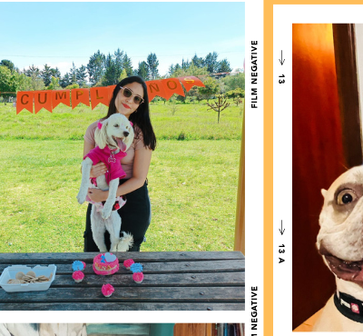
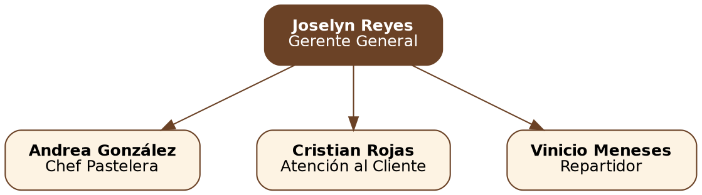
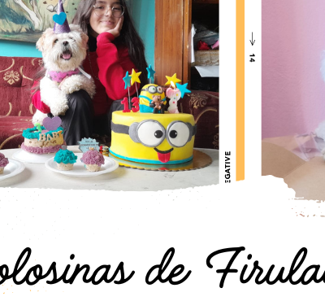
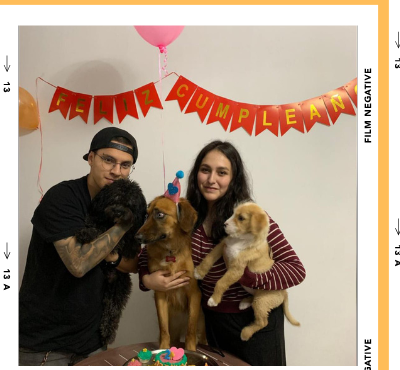
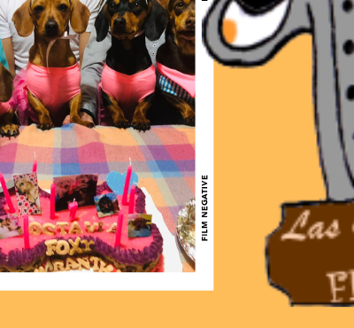

Nuestra Empresa
Sobre nosotros
5 años horneando felicidad
Las Golosinas del Firulais nació como un proyecto familiar en Quito hace más de 5 años, con el objetivo de ofrecer repostería 100% segura y deliciosa para perros y gatos. Elaboramos cada torta, galleta y bocadito de forma artesanal, cuidando cada ingrediente para que las mascotas disfruten sin poner en riesgo su salud.
Misión
Consentir a perros y gatos con golosinas artesanales seguras, elaboradas con ingredientes de calidad y mucho amor.
Visión
Ser la repostería para mascotas más querida del norte de Quito, expandiendo nuestros productos a nivel nacional.
Valores
Amor por los animales, calidad artesanal, higiene, puntualidad y cercanía con nuestros clientes.
Horario de atención
| Día | Horario |
|---|---|
| Lunes a viernes | 9:00 am – 7:00 pm |
| Sábados | 9:00 am – 2:00 pm |
| Domingos | Cerrado |
Nuestros servicios
- 🎂 Tortas personalizadas para cumpleaños de mascotas
- 🍪 Galletas artesanales aptas para perros y gatos
- 🎉 Kits decorativos para fiestas y eventos
- 🚚 Entrega a domicilio en Quito
- 📦 Pedidos para eventos y sorpresas especiales
Organigrama empresarial
Nuestro equipo de trabajo

Nuestros colaboradores
Joselyn Reyes
Gerente General

Andrea González
Chef Pastelera

Cristian Rojas
Atención al Cliente

Vinicio Meneses
Repartidor